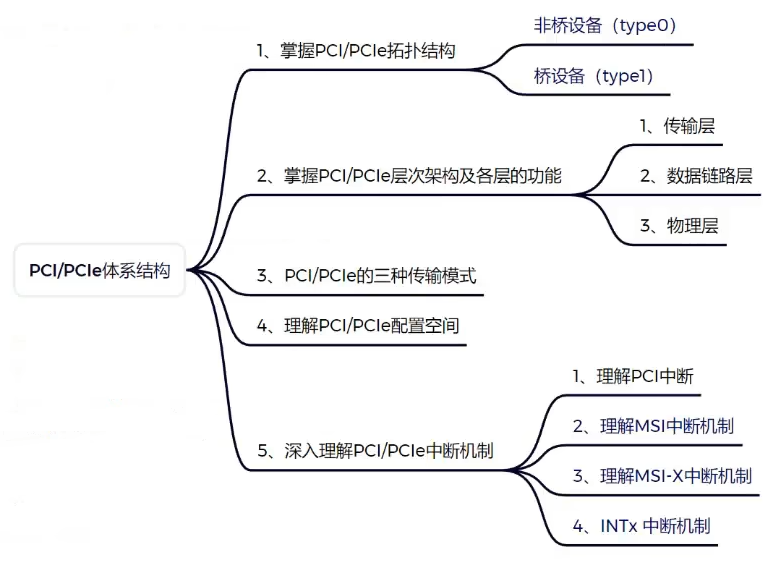
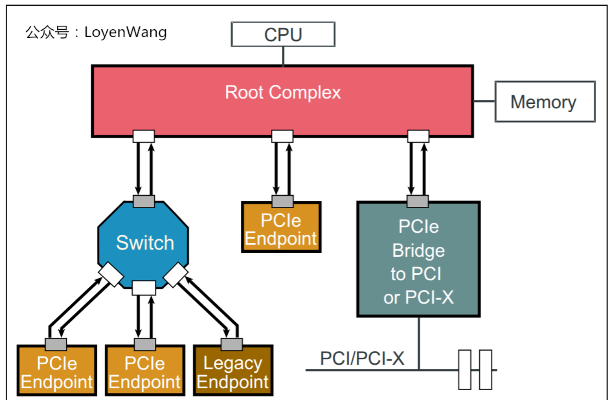
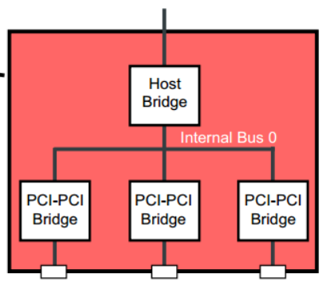
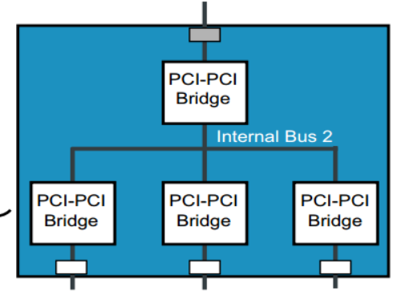
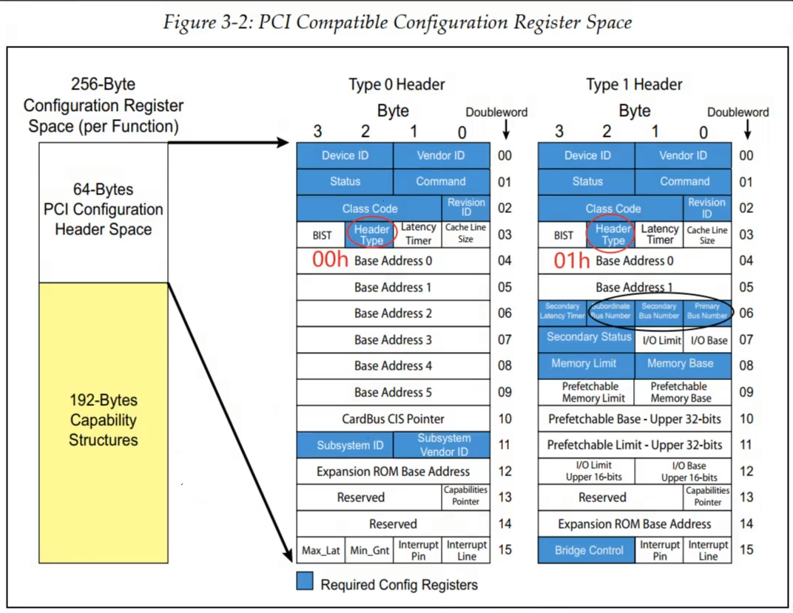
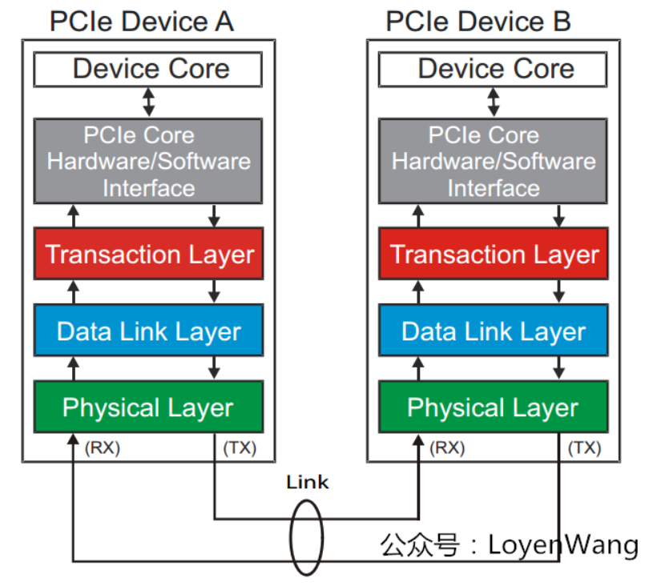

26 PCIE
PCIE

访问流程
PCIe总线的最大特点是像CPU访问DDR一样，可以直接使用地址访问PCIe设备（桥），但不同的是DDR和CPU同属于存储器域，而CPU和PCIe设备属于两个不同的域，PCIe设备（桥）的地址空间属于PCIe总线域。存储器域访问PCIe总线域或者PCIe总线域访问存储器域，需要经过一系列的转换才可以完成
参考链接：https://blog.csdn.net/u011037593/article/details/137697527
拓扑结构
PCIE并不是像IIC/PCI那样的共享并行总线式结构，它是点对点通信的串行总线
- 点对点通信：不存在总线仲裁、广播冲突等问题
- 串行通信：一个bit一个bit的发送数据

在PCIE的拓扑中，有以下这些十分重要的概念：
Root Complex
Root Complex是CPU和PCIe拓扑之间的接口，可能是一个单独的芯片（北桥）或者SoC内部的PCIE控制器。它是整个PCIE拓扑的起点。
- 本质：将CPU的request转换成PCIe的TLP包（Configuration、Memory、I/O、Message）
End Point
Endpoint是PCIE的终端设备，提供具体的功能（网络 / 存储 / 图形…）它没有下游，是叶子节点
- 本质：接收 TLP → 执行 → 返回 TLP
Switch
提供扇出能力，让更多的PCIe设备连接在PCIe端口上
- 本质：接收和转发TLP
Port
不管是RC还是EP，要和其他总线相连，都需要一个端口，这个端口被称为Port。图中白色的小方块代表Downstream端口，灰色的小方块代表Upstream端口
Bridge
桥接设备，用于去连接其他的总线，比如PCI总线或PCI-X总线，甚至另外的PCIe总线。任意2个Port相连一定需要一个桥接设备，用来处理PCIE数据的转发、总线仲裁等
- 像RC、Siwtch这样本身就有多个Port的设备，他们内部其实也有桥设备


Bus/Device/Function
使用lspci会看到00:1c.0这样的东西，这其实是Bus:Device.Function。每个PCIe设备的功能都有唯一的BDF，其中Bus Number占用8位，Device Number占用5位，Function Number占用3位。
PCIe总线采用的是一种深度优先（Depth First Search）的拓扑算法来分配Bus，且Bus0总是分配给RC。每个端口内部都有一个虚拟的桥设备，并且这个桥也应有设备号和功能号。每个设备必须要有功能0（Fun0），其他的7个功能（Fun1~Fun7）都是可选的

Function 是PCIe设备内部的“一个可被系统单独识别和配置的端点”。每个Function都有独立的配置空间、BAR、Vendor/Device ID、中断，在Linux中也是独立的pci_dev，所以也需要独立的驱动
参考链接
事务模型
“事务”指的是一次通过TLP完成的PCIE总线操作，包括请求和响应
MMIO、I/O、配置、中断、DMA，本质上都是不同类型的PCIE事务
事务的核心载体是协议栈的TLP层，包含：
- 事务类型
- 地址 / Tag / Length
- 数据
- 校验
PCIE的事务有以下几种类型：
| 事务类型 | 用途 | 例子 |
|---|---|---|
| Memory Read/Write | MMIO | readl/writel |
| I/O Read/Write | x86 IO | inl/outl |
| Config Read/Write | 枚举/配置 | lspci, setpci |
| Message | 中断/控制 | MSI/X |
| Completion | 读返回 | readl()返回值 |
| Atomic | 原子操作 | 少见 |
| Vendor | 私有协议 | 少见 |
通过该表格我们可以知道CPU到底能和PCIE设备进行哪些交互
一次数据传输的完整流程（以内存读为例）：
- 首先CPU控制RC发一个Memory Read TLP
- 然后EP收到后，返回一个Completion TLP
1 | CPU ──Read Req──▶ Device |
由此我们可以知道，PCIE的通信也是请求-响应式的
配置空间
每个PCIE设备都有一个配置空间（本质上是个寄存器）CPU通过读取PCIE的配置空间，来了解这个PCIE设备的一些具体信息，从而使用它
1 | 配置空间 = PCIe 设备的“身份证 + 控制面板” |
由于所有PCIE设备都有，所以配置空间寄存器的大小和结构是标准化的
- 配置空间大小：64B(PCI协议引入的基本配置信息) + 4KB(PCIE协议引入的扩展配置信息)

配置空间主要包含了以下信息：
- 设备识别：Vendor ID、Device ID、Class Code
- 配置设备：打开 MMIO / DMA、配置BAR
- 启用能力：MSI/MSI-X、PCIe features
参考链接
Capability
表示PCIE设备支持的能力（比如MSI），用链表进行存储，它的结构是这样的：
1 | [ID | Next Pointer | Data] |
BAR
CPU在初始化PCIE设备时，会将PCIE地址空间的一些内存（寄存器）映射到CPU的地址空间，这样CPU就可以像访问DDR一样访问PCIE设备了（比如使用rd、sd汇编命令）。这种映射的实现靠的就是BAR(Base Address Register)
BAR其实是配置空间寄存器的一部分，位于配置空间的0x10~0x24这几个偏移地址。每个BAR是一个32/64bit的寄存器，且存的不是纯地址数据，而包括以下几部分：
- 映射的类型（MMIO / IO）
- 映射起始地址
- 地址大小
BAR寄存器通常包括2部分：[address|flags]，flags通常有以下字段：
| bit | 含义 |
|---|---|
| bit0 | 0 = memory BAR |
| bit1-2 | type（32/64bit） |
| bit3 | prefetchable |
对于BAR映射的那段内存，需要通过ioremap进行映射，CPU通过write/store这样的汇编指令访问
1 | struct pci_dev *pdev; |
如何通过BAR里的数据得知请求映射内存的大小？
1.CPU往BAR里写0xFFFFFFFF
2.对应BAR会根据实际需要映射的内存大小返回一个mask，比如0xFFFFF000
3.大小通过以下公式计算：size = ~mask + 1
- 低12位为0，则实际大小为0x1000 = 4KB
枚举流程
下面介绍下从上电到PCIE设备被正确初始化的详细流程：
1.链路训练状态机（LTSSM）：PCIE设备刚上电时，还不能正常通信，需要EP和RC建立连接，这一步需要双方协商速率（Gen1/2/3/4/5）、带宽（x1/x4/x8/x16）、时钟同步…LTSSM是硬件自动完成的，不需要我们再写代码了
2.探测设备：在bios(x86)或者kernel启动早期，RC会以递归的方式扫描Bus 0的Device 0~31的Function 0~7，来发现所有的PCIE设备（能用lspci看到）并创建pci_dev
- 设备的探测主要是发送Config Read TLP，如果读的到Vendor ID，则说明探测到设备了
3.分配资源：给每个探测到的设备分配BAR
4.初始化设备：通过配置空间来对设备进行配置
中断
PCIE有3个中断机制
INTx
该方式使用一根信号线通知CPU发生中断
1 | 设备 ---- INTA# ---- CPU |
该方式有以下缺点：
- 所有设备共享中断线，易发生冲突，且CPU还得一个设备一个设备的查看到底是谁发生了中断
MSI
该方式不再用物理的信号线通知CPU发生中断，设备发生中断时，会往一个固定的地址写值（通过一个内存写TLP），CPU读取到对应地址的值是中断时，即可触发中断
1 | Device ── Memory Write TLP ──▶ APIC（中断控制器） |
MSI-X
尽管MSI很好用，但是它最多支持配置32个中断，这对于高性能设备还是太少了，所以有引入了MSI-X中断。
MSI-X是MSI的增强版，维护了一个vector表（类似CPU的中断向量表）来记录每个value对应哪个PCIE设备的中断
1 | MSI-X Table |
硬件接口
PCIE每个方向的数据由2根差分串行信号传输，发送/接收2个方向一共就有4根线：TX+、TX-、RX+、RX-。一对发送 + 接收信号线的双向数据线被称为一个Lane：

一个PCIE设备可能有多个Lane：
- Lane越多，数据带宽越大
- 2个PCIE的链接成为一个Link
- 一个Link最多32条Lane，我们常看见的x1、x8、x16指的其实就是Lane的数量
如何理解PCIE是串行的？
PCIE桥和PCIE设备通信时，数据都是一位一位发送的，一组数据(addr+data+校验位)会组成一个数据帧，PCIE设备接收完一个数据帧后，进行解析和校验，最后才获取数据。这和串口非常像啊！！
接口信号
参考链接：
层次结构
PCIe规范定义了分层的架构设计，包含4层. 数据包的封装与解封装，与网络包的创建与解析很类似


应用层：这一层决定了PCIe设备的类型和基础功能，由软件和硬件协同实现
- 如果该设备为EP，则其最多可拥有8项功能（Function），且每项功能都有对应的配置空间（Configuration Space）
- 如果该设备为Switch，则应用层需要实现包路由（Packet Routing）等相关逻辑
- 如果该设备为RC，则应用层需要实现虚拟的PCIe总线0（Virtual PCIe Bus 0），并代表整个PCIe总线系统与CPU通信。应用层是所有请求的目的或者源
Transaction层（事务层）：负责TLP包（
Transaction Layer Packet）的封装与解封装，此外还负责QoS，流控、排序等功能Data Link层（数据链路层）：负责DLLP包（
Data Link Layer Packet）的封装与解封装，此外还负责链接错误检测和校正，使用Ack/Nak协议来确保传输可靠Physical层（物理层）：负责
Ordered-Set包的封装与解封装，物理层处理TLPs、DLLPs、Ordered-Set三种类型的包传输
参考链接
驱动框架
概述
Linux下PCI和PCIE设备用的都是同一个驱动框架PCI Subsystem，从软件的角度并没有对2种协议进行区分。从总体上来看，对于该类设备，还是遵循着Linux驱动框架种的”device-bus-driver“设计思想
PCIE和USB其实很像，通信时都分host(RC)和device(EP) 对应的驱动框架也有2套。如果要让SoC作为从设备，就得用EP/Gadget框架
RC的软件框架分为3层：
- 第一层为RC Controller Driver（主机驱动层），和RC Controller硬件直接交互，实现底层TLP包的发送，不同SoC的实现一般都不相同
- 第二层为Core层（核心层），该层将Controller进行了抽象，提供了统一的接口和数据结构，将所有的Controller管理起来，同时提供通用PCIe设备驱动注册和匹配接口，完成驱动和设备的绑定，管理所有PCIe设备
- 第三层为设备驱动层，针对Storage、Ethernet、PCI桥等设备编写驱动，并结合字符/块/网络驱动框架与应用层进行交互
EP的软件框架分为5层：
- 第一层为EP Controller Driver，和RC Controller Driver的功能相似，只是把控制器配置成了另一个模式
- 第二层为EP Controller Core层，该层向下将EP Controller进行了抽象，提供了统一的接口和数据结构，将所有的EP Controller管理起来
- 第三层为EP Function Core，该层统一管理EPF驱动和EPF设备，并提供两者相互匹配的方法
- 第四层为EP Configfs，在用户空间提供了配置和绑定EPF的接口，用户可以通过这些接口配置EPF，而无需修改驱动
- 第五层为EP Function Driver，和PCIe设备的具体功能相关

参考链接
PCIE设备和驱动的匹配和之前学过的常见字符设备/IIC/SPI都不太一样，IIC之类的设备需要在设备树中对设备进行描述，而PCIE并不需要。本质上是因为前者需要软件描述硬件，而PCIE是一种自描述的设备，RC的驱动中会对各个Bus进行扫描，通过读取配置空间即可了解各个PCIE设备的详细信息，进而创建pci_dev实例
1 | boot |
RC框架
当PCIE Controller被配置成RC模式时，我们一般是为EP写设备驱动，因为Controller的驱动一般原厂都写好了。那么我们写设备驱动时，其实无非就是在做以下几件事：
- 读写配置空间
- BAR空间映射
- DMA
- 中断处理
主机驱动层
这层主要负责初始化和配置PCIE Controller，让他能够正确地发送/接收TLP包，不同的PCIE Controller的实现千差万别，这层主要是在实现核心层定义的那几个ops函数指针
核心层
RC
核心层使用pci_host_bridge来描述Root Complex，它本身也是一个设备
pci_ops描述访问配置空间的方法，需要主机驱动层实现。常用的是map_bus、read和write，map_bus用于映射访问配置空间的region，read和write用于读写配置空间。
1 | [include/linux/pci.h] |
Bus
RC Core层使用struct pci_bus数据结构描述PCIe bus。所有PCIe bus组成一个PCIe树型结构。parent指向Parent buses，children指向Child buses。devices链表保存该bus上的所有设备。number为该bus的总线编号，primary表示上游总线编号，busn_res保存桥下游总线编号范围，max_bus_speed表示该bus支持的最大速度，cur_bus_speed表示该bus当前的速度。pci_find_bus根据PCIe域和总线编号查找struct pci_bus，pci_add_new_bus创建一个struct pci_bus并添加到父总线上，注册Host Bridge时会自动创建bus0的数据结构
注意：
struct pci_bus描述的是物理上的总线，不是“device-bus-driver”模型下的总线，后者叫pci_bus_type
1 | [include/linux/pci.h] |
PCI Device
struct pci_dev数据结构描述PCIe Devices。devfn表述device和function编号，vendor、device等保存PCIe设备配置空间头信息，resource保存设备的资源，如BAR、ROMs等
1 | [include/linux/pci.h] |
PCI Driver
1 | [include/linux/pci.h] |
PCIE的驱动和设备通过哪种方式匹配
- RC：一般都是挂在platform总线上的，通过设备树的compatiable属性匹配
- EP：挂在PCIE总线上，不通过设备树描述，一般使用id_table进行匹配